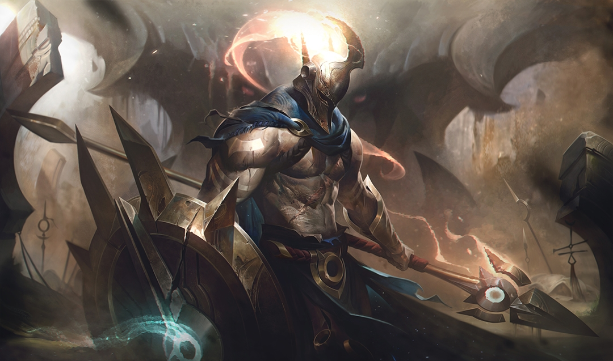
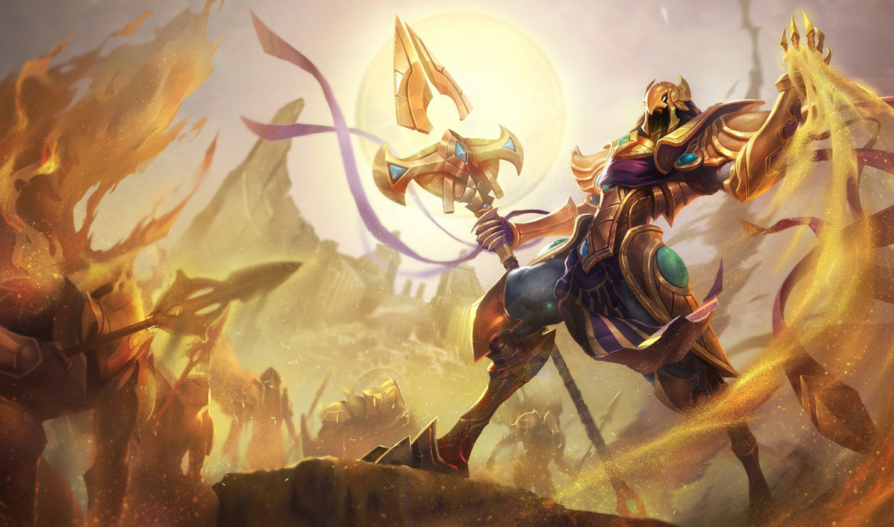

Character Detail
| Image | Story | Name |
|---|---|---|
|  | Pantheon who's real name is Atreus was once a man who was feared by many. This would however change when he went to mount Targon to call upon the God of War Pantheon who saw him unworthy thus taking him as a vessel to finish his fight with the Darkin Aatrox. Failing to defeat the darkin after years of fighting the man Atreus suddenly gained consciousness as the God of War vanishes from his body. He then finished the job and was later called Atreus/Pantheon the aspect of war vowing to protect all mortals. | Pantheon "The Unbreakable Spear" |
 |
Born into a patrician family, Swain wanted to prove that he was worth being born into a noble family. He one day found out that he could hear voices and one day a raven with four eyes talked to him about the enemies of Noxus. Swain being able to be granted a commission into the army, found out that he was gifted the power of the demon trapped in him. He later discovered that he could weild this power when a failed invasion caused him to lose his left hand which then reformed in a form of a ravens claw made from ancient mana. This made him rise in power turning into one of the three leaders of Noxus. | Swain "The Noxian Grand General" |
|  | Azir was a mortal emperor who was the most powerful sand sorcerer of Shurima. Not only was he an effective ruler, he was also a gentle and kind hearted ruler who even gave pity to the slaves. One day during an ascension ritual to turn his most loyal comrades into God like creatures his so called eternal brother Xerath betrayed him killing him on the spot. This would cause Shurima to fall after Xerath tried stealing the power of the ascended causing his body to not hold such power devastating all of Shurima. After being revived a millenia after the fall of Shurima, he was able to ascend to god like creature like anubis and because his power grew so did his sand manipulation. From the debris of Shurima, he revived the city in an instant causing the rise of Shurima from dust again. | Azir "The Emperor Of The Sands" |